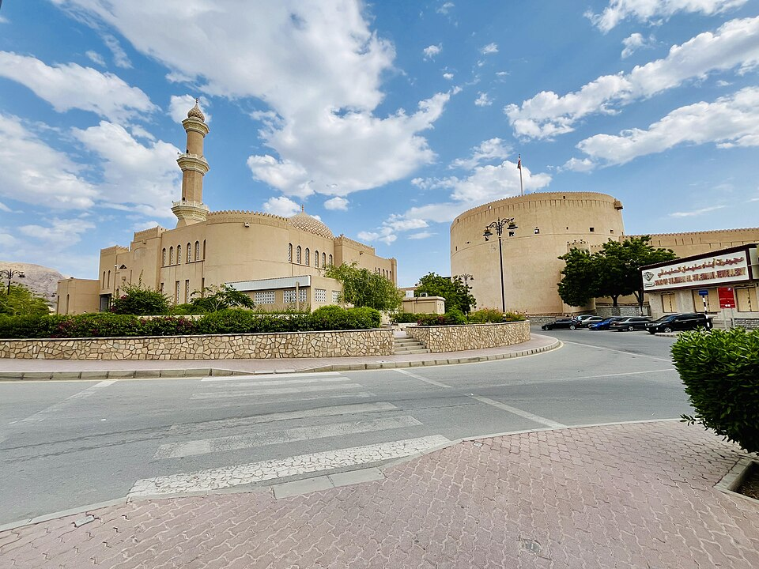

Le décret royal 6/2003 définit un cadre de protection des réserves, des espèces et des autorisations.

Le droit omanais de conservation de la faune dépasse la seule fixation de périodes de chasse. La loi sur les réserves naturelles et la protection de la faune, issue du décret royal 6/2003 du 8 janvier 2003, encadre les espèces protégées, les réserves, les autorisations et les sanctions.
Le texte définit largement la chasse : capture volontaire, immobilisation, mise à mort ou tentative de capture. L'article 14 exige une autorisation pour chasser, détenir, élever ou transférer des animaux protégés et leurs produits, à l'intérieur comme à l'extérieur des réserves. D'autres activités de collecte et de détention de matériel biologique sont également réglementées.
L'outarde houbara figure dans la première annexe législative. La seconde comprend notamment les faucons, chouettes, aigles et vautours. Les dispositions pénales distinguent les infractions selon les espèces et prévoient aussi la confiscation des animaux, des instruments et des véhicules utilisés.
L'article 13 établit plusieurs degrés de protection à l'intérieur des réserves, avec des zones publiques à usage compatible et des secteurs soumis à autorisation.
Cette présentation de 2026 analyse la loi originelle de 2003 : il ne s'agit pas d'une nouveauté législative. Les modifications et règlements les plus récents doivent être vérifiés avant toute application à une situation concrète.
Sources officielles : ministère omanais de la Justice et des Affaires juridiques, décret royal 6/2003, notamment articles 1, 13 à 17 et annexes.
Texte de loi sur le site officiel
Crédit de la photo du monument: Nizwa Fort Oman.jpg — Adhilaslam — CC BY-SA 4.0. Copie redimensionnée, sans modification éditoriale.